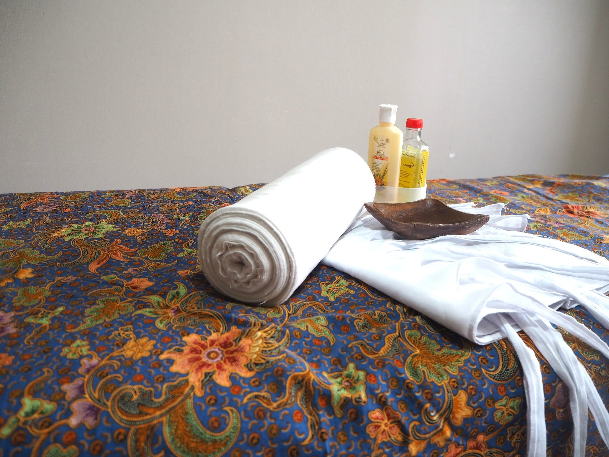
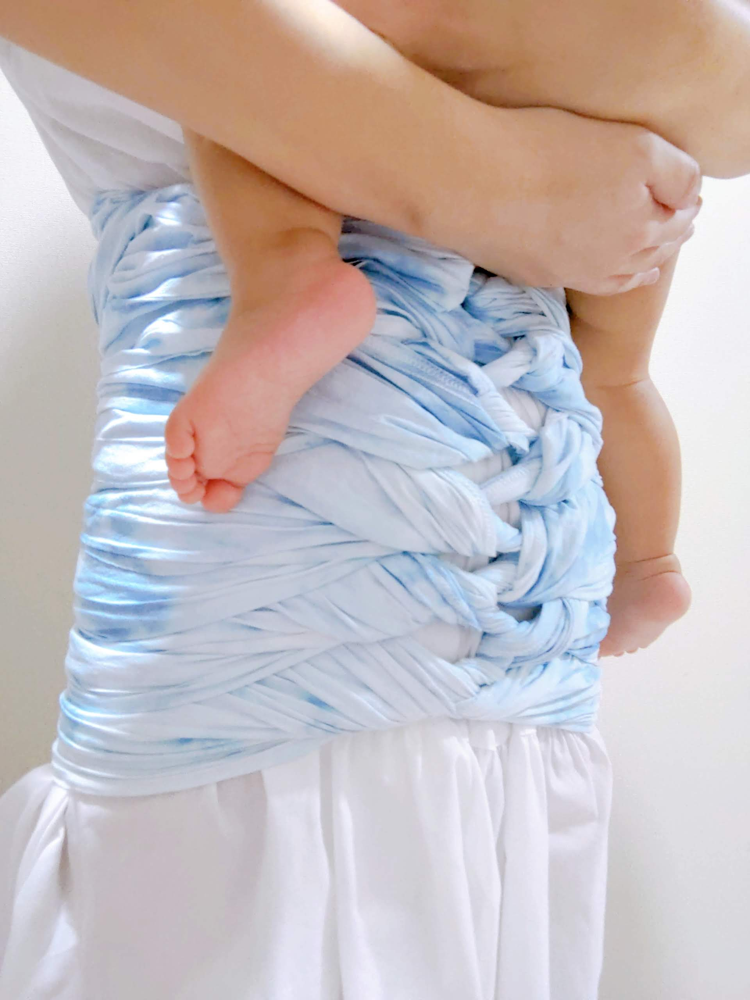
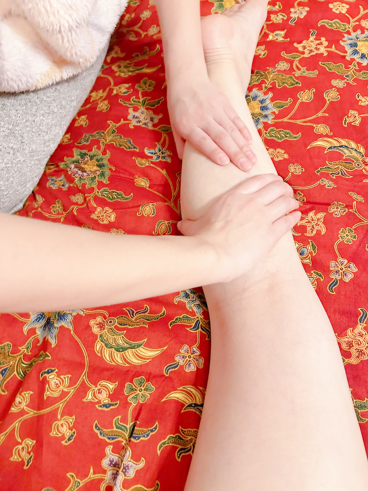
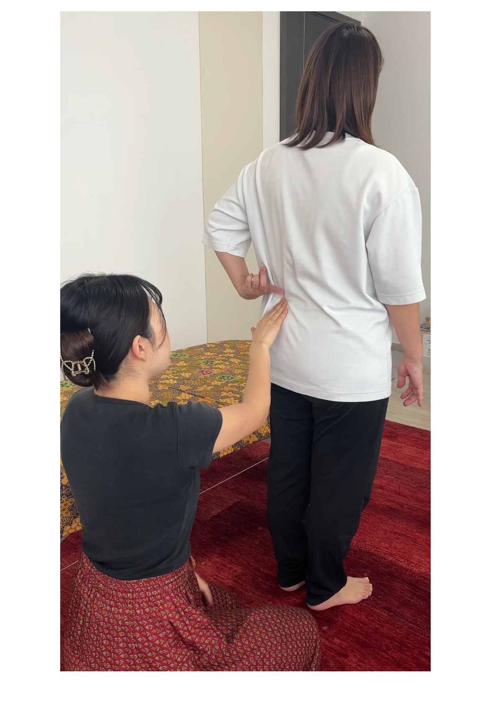
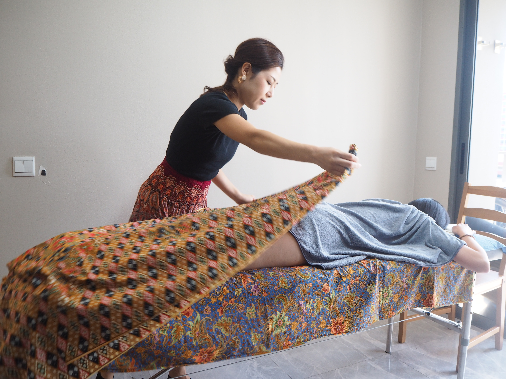
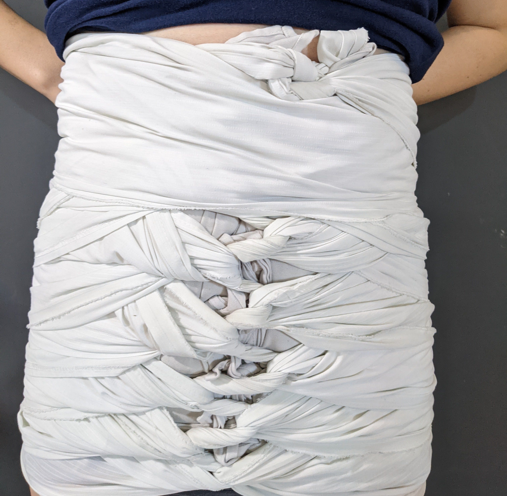
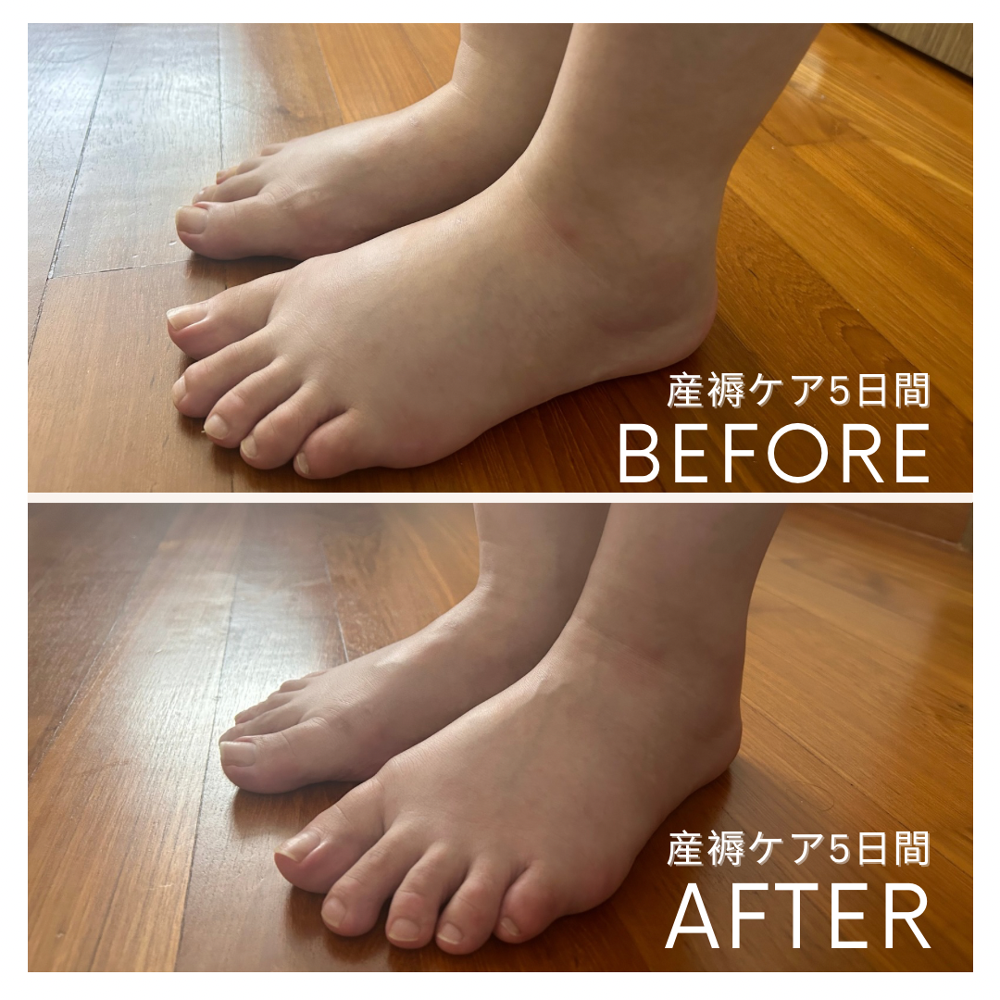
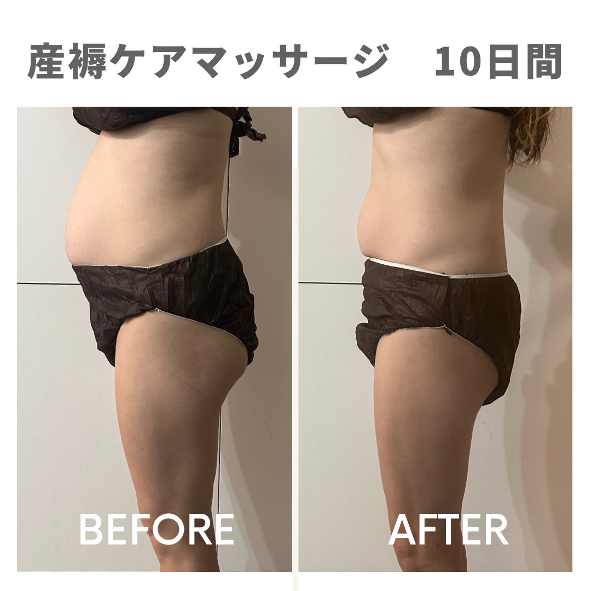
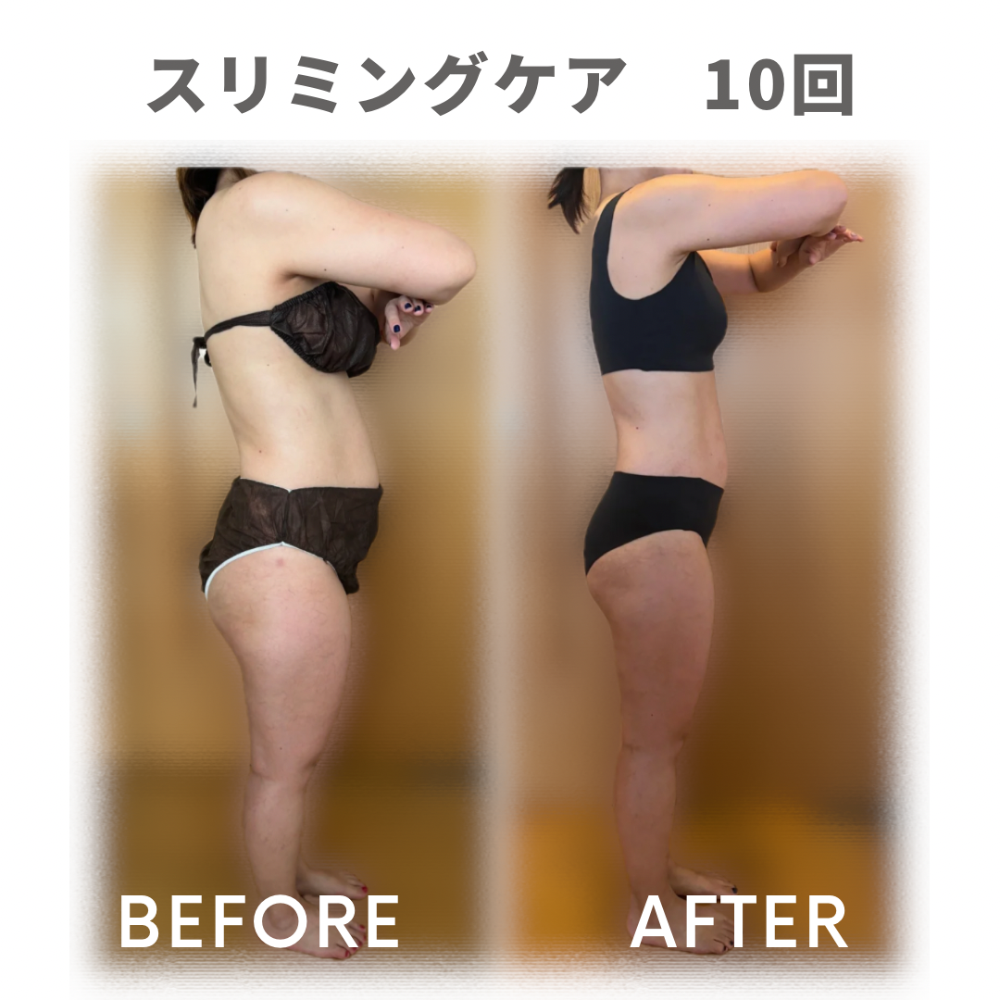

出産したあなたへ
おつかれさま

「心」に寄り添う
マレー式の知恵
「Hati（ハティ）」はマレー語で「心」を意味します。HATI SINGAPURAは、シンガポールに暮らす日本人のお母さんが、出産後の大切な回復期を安心して過ごせるよう生まれたサービスです。
"マレー伝統 × 現代ケア × 日本人女性"をコンセプトに、マレーシアやシンガポールに古くから伝わる産後ケアの知恵—ウルッ・ムラユ（伝統マッサージ）、ベンクン（腹部バインディング）の伝統技術を、現代の日本人女性に寄り添うかたちでお届けします。
HATI SINGAPURAでは、一時的なリラクゼーションだけでなく、ご自身でも変化を実感していただける結果にこだわったケアをご提供しています。また、産後ならではの揺らぎやすい心にもそっと寄り添いながら、心身の回復をサポートいたします。
お腹だけでなく、全身が少しずつ整い、本来の軽やかさを取り戻していく。その変化の過程も楽しみながら、一人ひとりに寄り添い伴走いたします。
サービス内容
マレー伝統の技法と現代の知識を組み合わせた
女性のためのトータルケアメニュー

HATIマレー式産褥ケア
産後ママのための全身＆骨盤ケア
《パッケージプラン》
５日間・７日間・１０日間
HATIマレー式オイルケア
身体の不調改善＆リラクゼーション
滞ったリンパをしっかり流す。疲れたときに受けるとやみつきに。

HATIスリミングケア
デトックス＆引き締め
足やおなかなど気になる箇所のセルライトケア。産後こそキレイになりたい方に。
※ 全てのサービスはご自宅への出張対応です。
シンガポール島内全域に伺います。
料金はお問い合わせください。
HATIマレー式産褥ケア
施術の流れ
初めての方も安心してお受けいただけるよう、
丁寧にご説明しながら進めます。
初日：約2時間 ／ 2日目以降：約1時間半
カウンセリング
現在のお身体の状態やお悩みを丁寧に確認し、その日の体調や回復状況に合わせて、最適な施術内容をご提案します。

全身オイルマッサージ
４種類のオイルからご自身に合わせたオイルで全身トリートメント。疲労回復・血行促進をサポートします。

腹部バインディング
インナーバインディング＋さらしの2段階で、骨盤から肋骨まで引き締め体を安定させます。

そのまま安静・リラックス
バインディングを装着したまま最低6時間（可能なら翌日まで）安静にお過ごしいただき、体をしっかり安定させます。

到着前にさらしを外し、シャワーと授乳（または搾乳）をお済ませください。→ 全身オイルマッサージ＋腹部バインディング
全身オイルマッサージのみ → サイズ測定・ビフォーアフター確認
ご利用いただいた
お母さんから
バンディング中はもちろんですが、外しても尾てい骨の痛みが和らいでいて。明らかに痛みが軽減されてびっくりです！夫にはお腹が戻ってる！と驚かれました。とっても嬉しいです！
施術はもちろん、みきさんといろいろお話しできたことで心もほぐせた感じがします。気がつけば家族以外で日本語で話せるのがミキさんだけで、日本人のセラピストさんがいらっしゃるのはシンガポールの産後ママにとっても大きなことだと感じました。
10日間マッサージありがとうございました！身体が楽になったし、疲れていた身体が回復しました。夫にも痩せたと驚かれて嬉しかったです。子育てについても相談させていただき安心感が凄かったです。
5日間の産褥マッサージを経て、見事5キロ近く減りました！妊娠中に13キロ太ってしまった私…旦那さんが育休中に自宅で施術を受けて体型を戻せるのであれば、こんなに嬉しい事はない。本当にありがとうございました。
実際の変化をご覧ください

産褥ケア 5日間

産褥ケア 10日間

スリミングケア 10回
よくあるご質問
牧浦 美希
Miki Makiuraはじめまして、牧浦美希です。日本人として、シンガポールでHATIマレー式産後ケアセラピスト・スクール講師として活動しています。
「産後ケアを自分のために」と思えるお母さんを一人でも増やしたい。そんな思いで活動を続けてきた結果、おかげさまで日本人人気No.1のセラピストとして多くのお母さんにご利用いただいています。
私自身も３児の母として、産後の身体のつらさも、言葉にならない不安も体験してきました。技術はもちろん、心に寄り添ったケアで回復のお手伝いをさせていただきます。
- シンガポール公認国際資格保持
- HATIマレー式産後ボディケアセラピスト
- HATIスクール講師
- シンガポール人気No.1 日本人セラピスト
- ３児の母
コラム
シンガポールで出産されるママへ。
産後の体や心に関するお役立ち情報をお届けします。